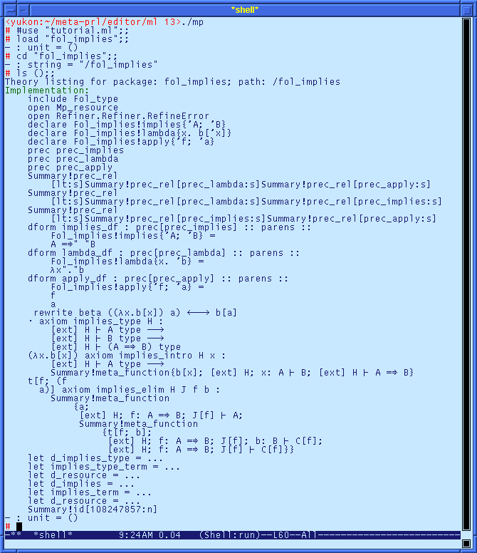

After you have defined the term true and false, the next step is to define the simple logical operators not, and, or, and implies. In this page, we go through the process of implementing the implies module; the process is similar for the other operators, and the files may be found in the distribution.
The interface for implies follows the standard format. We include the Fol_type module to define well-formedness of the term, and we declare a new binary operator for implies. We also define proof terms lambda and apply, and display form precedences for each of the new terms.
1. Define the implies interface by adding the following lines to the file fol_implies.mli:
include Fol_type prec prec_implies prec prec_lambda prec prec_apply declare implies declare lambda{x. 'b['x]} declare apply{'f; 'a}
The implementation for the implies term includes the declarations of the interface, and it also defines a display form, and the introduction and elimination rules for implication.
2. Declare the syntax for the implies operator by adding the following lines to the file fol_implies.ml:
include Fol_type declare implies declare lambda{x. 'b['x]} declare apply{'f; 'a}
The next step is to provide display forms that print these terms using standard terminology. The display forms for these terms require parenthesization for non-ambiguous parsing, so we introduce several precedence declarations.
3. Provide precedence delcarations for pretty-printing, by adding the following lines to the fol_implies.ml file:
prec prec_implies prec prec_lambda prec prec_apply prec prec_lambda < prec_apply prec prec_lambda < prec_implies prec prec_implies < prec_apply
These precedence declarations impose a mimimum requirement on the order for the precedences prec_lambda < prec_implies < prec_apply.
The display form are added with dform declarations.
4. Add display forms for each of the terms in Fol_implies:
dform implies_df : parens :: "prec"["prec_implies"] :: implies{'A; 'B} = szone pushm[0] slot{'A} hspace Rightarrow `" " slot{'B} popm ezone dform lambda_df : parens :: "prec"["prec_lambda"] :: lambda{x. 'b} = szone pushm[3] Nuprl_font!lambda slot{'x} `"." slot{'b} popm ezone dform apply_df : parens :: "prec"["prec_apply"] :: apply{'f; 'a} = slot{'f} hspace slot{'a}
The Fol_implies module defines computation over the proof terms lambda and apply. Computation uses the standard beta-reduction form.
5. Define computation over proof terms with the following rewrite rule:
primrw beta : (lambda{x. 'b['x]} 'a) <--> 'b['a]
The implication has introduction and elimination rules corresponding to natural deduction rules for implication: in order to prove (A => B), assume A and prove B; if A is provable with assumption (A => B), then B is also a valid assumption. We add the inference rules as follows.
6. Add the inference rules for implication:
prim implies_type 'H : sequent ['ext] { 'H >- "type"{'A} } --> sequent ['ext] { 'H >- "type"{'B} } --> sequent ['ext] { 'H >- "type"{implies{'A; 'B}} } = trivial prim implies_intro 'H 'x : sequent ['ext] { 'H >- "type"{'A} } --> ('b['x] : sequent ['ext] { 'H; x: 'A >- 'B }) --> sequent ['ext] { 'H >- 'A => 'B } = lambda{x. 'b['x]} prim implies_elim 'H 'J 'b : ('a : sequent ['ext] { 'H; f: 'A => 'B; 'J['f] >- 'A }) --> ('x['b] : sequent ['ext] { 'H; f: 'A => 'B; 'J['f]; b: 'B >- 'C['f] }) --> sequent ['ext] { 'H; f: 'A => 'B; 'J['f] >- 'C['f] } = 'x['f 'a]
The proof terms for the rules use second-order binding. For instance, the proof term for the implies_intro rule uses the second-order binding 'b['x] to form the body of the lambda.
The basic proof automation is accomplished by adding the rules for implication to the dT tactic. Just as for the Fol_false module, we need a rule for well-formedness.
7. Add the well-formedness rule to the dT tactic as follows:
let d_implies_type i p = if i = 0 then implies_type (Sequent.hyp_count_addr p) p else raise (RefineError ("d_implies_type", StringError "no elimination form")) let implies_type_term = << "type"{implies{'A; 'B}} >> let d_resource = Mp_resource.resource_improve d_resource (implies_type_term, d_implies_type)
The introduction and elimination forms are added as a single addition.
8. Add the introduction and elimination forms to the dT tactic:
let d_implies i p = if i = 0 then let v = Var.maybe_new_vars1 p "v" in implies_intro (Sequent.hyp_count_addr p) v p else let v = Var.maybe_new_vars1 p "v" in let j, k = Sequent.hyp_indices p i in implies_elim j k v p let implies_term = << "implies"{'A; 'B} >> let d_resource = Mp_resource.resource_improve d_resource (implies_term, d_implies)
Both forms make use of the Var.maybe_new_vars1 function to compute a "new" variable name not occurreng elsewhere in the goal.
Before going on, we can view the theory in the editor. After compiling the FOL theory, and compiling the editor, this is the edited display.

The module summary contains an item for each of the parts of the theory. The ML functions are included, but the function bodies have been elided.